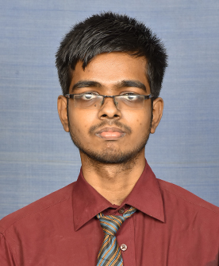

VISHNU VARDHAN R B

CARRER OBJECTIVE
Aiming to achieve a challenging and successful career where
I can make significant contribution using my innovative
ideas, knowledge and skills with the objective of
development and growth of organization.
EDUCATION
BE in Sri Sairam Engineering College
- Course-Electronic and communication
engineering
2020-2024 Cgpa 8.65
Higher Secondary
-
Holy prince Mat.hr.sec.school
2018-2020 percentage 88
SSLC
-
Holy prince Mat.hr.sec.school
2017-2018 percentage 94
LANGUAGES KNOWN
- English
- Tamil(MOTHER TONGUE)
- Hindi
SOFT SKILLS
- PROBLEM SOLVING
- TIME MANAGEMENT
- TEAM WORK
PROGRAMMING SKILLS
- Java(Intermediate)
- Python(Intermediate)
- HTML,CSS(Intermediate)
PROJECTS
MINI PROJECT - POSTFALL DETECTION
The system that identifies and reports instances of falls
after they have occured providing assitance and medical
attention to elderly people reducing the severity of injuries.
MAJOR PROJECT - PREFALL DETECTION
The system that aims to prevent falls by analysing persons
movements thereby providing early warnings especially for
the people who are at the risk of falling.
CERTIFICATES AND ACHIEVEMENTS
- Published an article in “IEEE newsletter smart cities” for our
project Titled “An Automated Wearable Fall Detection
System for Elderly People”.
link:DOI 10.17023/t71r-h385
- Published an conference paper in IEEE explore for our project titled "A Lightweight Wearable Fall Detection System using Gait Analysis for Elderly"
link:DOI: 10.1109/ICWITE59797.2024.10502620
- Runner Up in “Arcane2k23” - A national level symposium.
Link:Winning Certificate
- Finished a certification course on python by Cisco Netacad
Link:Python Certificate
- Finished a certification course on Networking by IIT Kanpur
Link:NPTEL Certificate
- Finished a certification course on deep learning by Edx
Link:Deep Learning Certificate
EXTRA CURRICULAR ACTIVITIES
- NSS volunteer for three years
- Volunteered for Blood donation Camps
- Volunteered for Many events conducted by NSS
{kind=link}